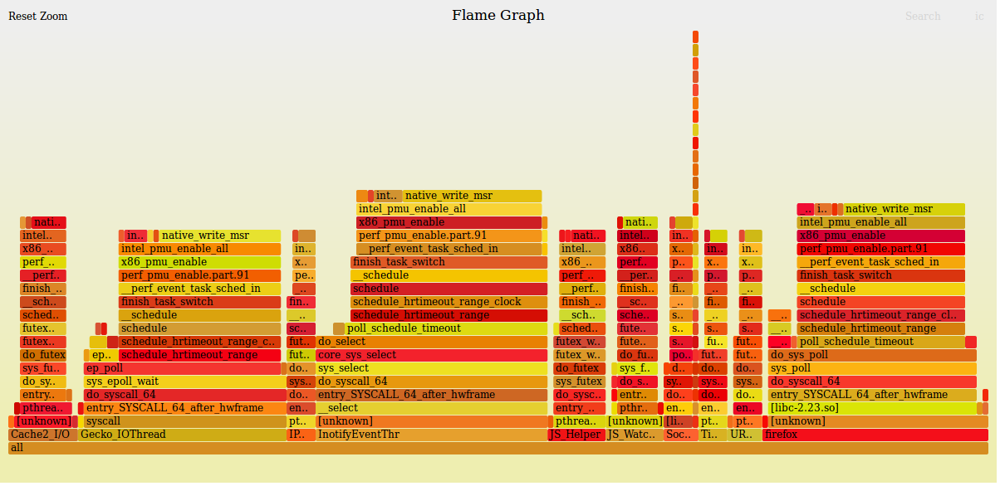

性能优化篇（7）：如何快速定位 CPU 性能瓶颈
Author:stormQ
Created: Wednesday, 21. October 2020 10:29PM
Last Modified: Tuesday, 03. November 2020 10:30PM
着手程序性能优化时，无论如何都绕不开这样一个问题——如何确定程序的哪部分代码最消耗 CPU。优先改善这些代码的性能，往往能达到事半功倍的效果。
本文以在
Ubuntu 16.04 X86-64
和
Ubuntu 16.04 aarch64——Nvidia TX2 平台
这两种系统环境下运行的程序为例，详细阐述了在这些系统环境下 CPU 性能瓶颈的定位方法。
工欲善其事，必先利其器。对于程序性能优化而言，亦是如此。
本节将要介绍的性能分析工具，主要具备以下特点：
运行速度快
即运行该性能分析工具，不需要嵌入任何代码到原程序中。
性能开销小
即该性能分析工具本身不会增加原程序的性能开销。从而，可以准确地测量原程序各部分的 CPU 利用率。
分析粒度适中
即该性能分析工具可以追踪函数级别的 CPU 利用率。这一点可以满足我们绝大部分的需求。
接下来会详细描述该性能分析工具分别在
Ubuntu 16.04 X86-64
、
Ubuntu 16.04 aarch64——Nvidia TX2 平台
系统环境下的安装步骤。
在 Ubuntu 16.04 X86-64 系统环境下，安装性能分析工具——perf（由 Linux 内核提供）的具体步骤如下：
step 1： 确定需要安装的 Linux 内核版本
$ perf
如果当前的 Linux 内核版本未提供 perf，则会输出如下类似内容：
WARNING: perf not found for kernel 4.15.0-47
You may need to install the following packages for this specific kernel:
linux-tools-4.15.0-47-generic
linux-cloud-tools-4.15.0-47-generic
You may also want to install one of the following packages to keep up to date:
linux-tools-generic
linux-cloud-tools-generic
从上面可以看出，当前的 Linux 内核版本 4.15.0-47 中未提供 perf。因此，需要我们自己安装。
step 2： 安装 perf
$ sudo apt-get install linux-tools-4.15.0-47-generic
step 3： 查看 perf 版本
$ perf -v
如果已成功安装了 perf，则会输出如下内容：
perf version 4.15.18
step 1： 编译 perf
$ cd /usr/src/linux-headers-4.4.38-tegra/tools/perf
$ sudo make -j6
step 2： 创建 perf 链接
$ sudo ln -s /usr/src/linux-headers-4.4.38-tegra/tools/perf/perf /usr/bin/perf
在创建上述链接后，我们可以直接使用
perf
命令，而不必包含该可执行目标文件的完整路径。
step 3： 安装依赖（optional）
$ sudo apt-get install flex bison libelf-dev libdw-dev -y
注意：
如果通过
perf report
等命令查看性能数据时，只显示了函数对应的地址，那么在安装
libelf-dev
和
libdw-dev
后，就可以看到函数对应的符号了。此外，被分析的程序需要有符号信息，即用 gcc/g++ 编译时带
-g
选项。
step 1： 采样性能数据
命令格式：
$ sudo perf record -g -F <HZ> -p <Process ID> -o <Output File>
示例：
比如对进程 ID 为 12345 的进程进行性能采样，采样频率为 99 赫兹，同时记录函数间的调用关系，最后将采样结果输出到 perf_12345.data 文件中。
$ sudo perf record -g -F 99 -p 12345 -o perf_12345.data
注：
record
，表示采样性能数据。（必填）
-g
，表示记录函数间的调用关系。（选填，建议使用）
-F 99
，表示采样频率为 99 赫兹。（必填）
-p 12345
，表示对进程 ID 为 12345 的进程进行性能采样。（必填）
-o perf_12345.data
，表示性能采样的结果保存到 perf_12345.data 文件中。如果不指定，默认保存到 perf.data 文件中。（选填）
注意：
被分析的程序需要有符号信息，即用 gcc/g++ 编译时带
-g
选项。
step 2： 查看性能数据
查看 perf.data（默认文件名称）的性能数据
$ sudo perf report
查看 perf_12345.data（自定义文件名称）的性能数据
$ sudo perf report -i perf_12345.data
对于大型复杂的程序，使用
perf report
命令不便于观察性能数据。
step 3： 可视化性能数据
1）创建性能分析专用目录
$ mkdir -p ~/perf_opt
2）下载可视化工具——FlameGraph
$ cd ~/perf_opt
$ git clone https://github.com/brendangregg/FlameGraph.git
此时，可视化工具就在我们的
~/perf_opt
目录下了（即 ~/perf_opt/FlameGraph 目录）。
3）使用可视化工具处理性能数据
命令格式：
$ sudo perf script -i <Input File> | ./FlameGraph/stackcollapse-perf.pl | ./FlameGraph/flamegraph.pl > <Output File>
示例：
$ sudo perf script -i ./perf_12345.data | ./FlameGraph/stackcollapse-perf.pl | ./FlameGraph/flamegraph.pl > flame.svg
注：
./perf_12345.data
，表示要处理的性能数据文件为当前目录下的 perf_12345.data 文件。
./FlameGraph
，表示可视化工具的路径。这里表示可视化工具位于当前目录下的 FlameGraph 子目录中。
flame.svg
，表示可视化工具处理后的输出文件。这里表示将可视化工具的输出保存到当前目录下的 flame.svg 文件中。
4）可视化性能数据
用浏览器查看可视化工具处理后的输出文件——flame.svg。

其中，宽度越宽，表示占用的 CPU 越多。
另外，将鼠标移至函数名称上时，会显示该函数（包括了其子函数）所占用 CPU 在该程序中的百分比。比如：如果一个函数占用 10%，并且该程序占用的 CPU 为 50%，那么该函数实际占用的 CPU 为 5%。
因此，通过可视化工具可以很方便地确定最消耗 CPU 的代码调用路径是哪个。
下一篇： 性能优化之目录
上一篇： 性能优化篇（6）：NEON 优化案例——低阶矩阵乘法（aarch64版）